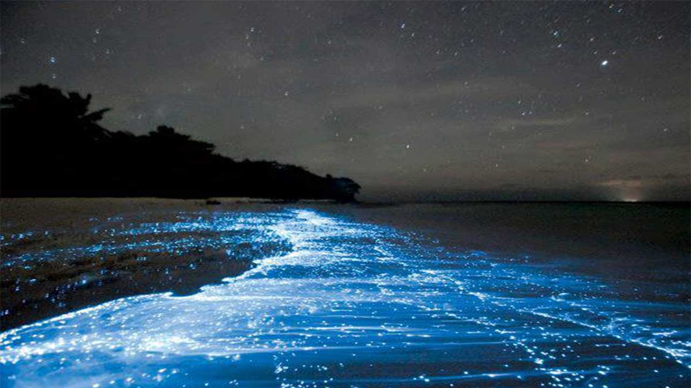
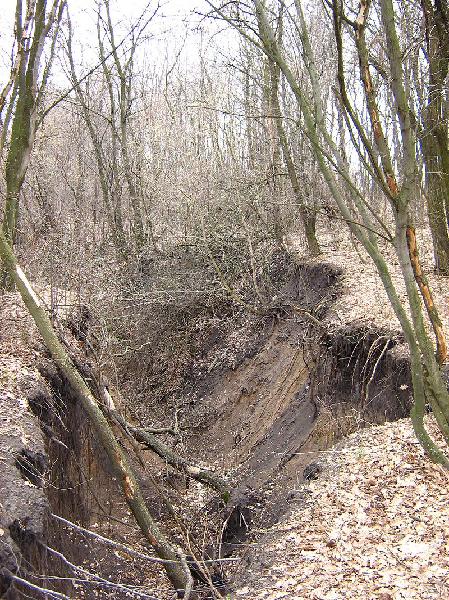
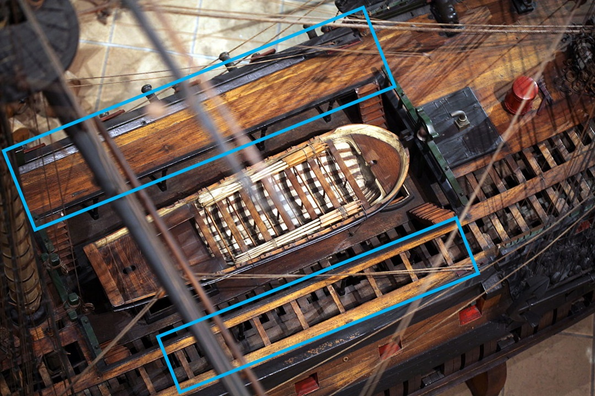

나폴레옹 시대 영국 전함의 전투 광경 - Lieutenant Hornblower 중에서 (14)
게시: 2019-05-13T06:30:08+09:00
제9장 더 시원한 육지에 접근하면서 바닷바람은 멈춰버렸지만, 육지와 바다의 기압 차이가 없어지는 것이 바로 이 한밤중의 바람 한점 없는 시간대였다. 바다 쪽으로 몇 마일만 가면 영원히 그치지 않는 무역풍이 불겠지만, 이 해변에는 눅눅한 고요함이 압도적이었다. 대서양에서 밀려오는 긴 파도는 육지에서 멀리 떨어진 첫번째 여울에 부딪히자마자 잠깐 부서지는 듯 하다가 다시 살아나, 마치 한때 건강하다가 최근 병을 앓아 아직 쇠약한 사람처럼 서쪽의 해변에 규칙적으로 부딪혀 거품으로 터지곤 했다. 사마나 반도의 석회암 절벽이 시작되는 이곳에는, 작은 물길이 절벽에 꽤 넓은 협곡(gully)을 파놓은 으슥한 구석이 넓은 해변 맨 동쪽 끝부분에 있었다. 그리고 바다와 파도, 그리고 해변이 모두 불타오르는 듯 했다. 밤의 암흑 속에서 바닷물 속의 인광이 형형하게 빛났고 파도와 함께 치솟아 해변까지 밀려왔는데, 론치 보트들이 해변으로 저어갈 때 노를 환하게 빛냈다. 보트들은 마치 불 위에 떠있는 듯 했는데, 보트가 지나간 자국마다 불빛이 새롭게 피어났다. 그래서 각 론치 보트들은 뒤에 긴 불의 꼬리를 달고 움직였고 노가 물을 저을 때마다 보트의 양쪽에 생생한 긴 자국이 생겼다.

(바닷물이 이렇게 빛나는 것은 플랑크톤 등의 해양 미생물 때문입니다.)
협곡 입구에의 상륙과 등정은 모두 쉬운 일이었다. 론치 보트들이 해변의 모래에 이물을 파묻자마자 상륙조는 허벅지까지 올라오는, 액체로 된 화염 같은 바닷물 속에 뛰어들었다. 그들은 무기와 탄약포 상자들이 젖지 않도록 그것들을 머리 높이 들어올린 채 걸었다. 상륙 대원 중 경험 많은 뱃사람들조차도 인광의 강렬함에 깊은 인상을 받을 정도였으니, 바다에 익숙하지 않았던 수병들은 그 광경에 흥분하여 소곤소곤 잡담 소리를 크게 냈고, 이를 제지하기 위해 매서운 명령이 쏘아붙여졌다. 부시는 론치 보트에서 가장 먼저 뛰어내린 사람 중 하나였다. 그는 첨벙첨벙 걸어 상륙한 뒤 대지의 익숙하지 않은 견고함 위에 우뚝 섰다. 그러는 사이 다른 이들도 그를 따라 상륙했다. 흠뻑 젖은 그의 바지에서 물이 뚝뚝 흘러내렸다.

(gully는 원래 도랑이라는 뜻의 단어로서, 빗물이나 시냇물 등의 흐름에 의해 땅이 깎여나간 길고 움푹 들어간 지형을 말합니다. 보통 계곡이라고 말하기에는 너무 작고 좁은 것을 gully라고 하는데, 우리말로는 뭐라고 해야 할지 몰라 저는 그냥 "꽤 넓은 협곡"이라는 모순적인 표현으로 번역했습니다.) 다른 론치 보트 방향에서 어두운 그림자가 나타나 그의 앞에 섰다. "제 공격조는 모두 상륙했습니다, 부관님." 그 그림자가 보고했다. "좋아, 미스터 혼블로워." "그러면 제가 전위대와 함께 협곡을 올라갈까요, 부관님 ?" "그래, 미스터 혼블로워. 명령을 수행하게." 부시는 자신의 금욕적인 훈련과 냉정한 성격이 허용하는 최대치로 긴장되면서도 흥분되었다. 생각 같아서는 당장 전투를 개시하고 싶었지만 혼블로워와 상의하여 짠 조심스러운 작전 계획은 그런 것을 허용하지 않았다. 그는 자신의 공격조가 열을 지어 집합하는 동안 옆에 비켜 서있었고, 혼블로워는 다른 공격조에게 소리를 질러 명령을 내렸다. "우현 팀 ! 나를 바싹 따라오도록. 모두 바로 앞 사람과 떨어지지 않도록 해야 한다. 너희들의 머스켓 소총에는 탄약이 장전되어있지 않다는 사실을 잊지 않도록 해라. 적을 만나더라도 방아쇠를 당겨봐야 아무 소용이 없다. 그런 상황에선 냉병기(cold steel : 화약무기가 아니라 총검이나 군도, 도끼 같은 총성이 나지 않는 무기만 쓰라는 이야기 : 역주)만 써야 한다. 만약 너희 중에 멍청이가 있어서 그 사이에 탄약을 장전해놓았다가 적과 조우시 발포를 한다면 그 녀석은 내일 갑판 중앙통로(gangway)에서 채찍질 48대를 맞을 줄 알아라. 그건 확실히 보장해주마. 울튼 !"

(Gangway라는 것은 윗 그림에서 파란색 사각형으로 표시해놓은 것으로서, forecastle(선수갑판)과 quarterdeck(선미갑판)을 연결하는 좌우측의 연결 통로입니다. 중앙의 빈공간에는 주갑판(main deck)이 노출되어 있고, 여기서는 대형 보트가 그 노출 공간에 놓여있네요. 이 그림에서 우현의 gangway는 일부러 널빤지를 깔지 않아 그 밑의 구조물을 노출시켜 놓은 상태입니다.)
"예, 부관님 !" "뒤쪽 열을 이끌도록. 너희들은 나를 따르라. 우측열부터 전진." 혼블로워의 공격조는 열을 지어 어둠 속으로 사라져갔다. 해병들도 이미 상륙을 시작했는데, 인광을 배경으로 하니 그들의 주홍색 자켓이 시커멓게 보였다. 어둠 속에서 그들이 줄을 맞춰 서니, 하얀색 십자 밴드(crossbelt)들이 희미하게 2열로 줄지어 선 것이 보였다. 부사관들이 해병들에게 낮은 목소리로 땍땍거리며 명령을 날렸다. 왼손으로는 여전히 군도 자루를 쥔 채, 부시는 오른손을 더듬어 벨트에 찬 권총들과 주머니에 든 탄약포들을 다시 한번 확인했다. 그림자 하나가 그들 앞에 서더니 발뒤꿈치를 절도있게 철컥 붙였다. "전원 집합 이상무입니다, 부관님. 행군 준비 완료." 화이팅의 목소리였다. "고맙네. 출발해도 좋네. 미스터 애벗 !" "부관님 !" "자넨에겐 따로 받은 명령이 있지. 나는 해병 분견대와 함께 출발하겠네. 우리를 따라오도록." "예, 부관님." 협곡을 따라 기어오르는 것은 꽤 길고 힘든 길이었다. 바닥을 덮고 있던 것이 곧 모래에서 넓고 평평한 석회암 바위로 바뀌었는데, 이 북쪽 사면에 풍부하게 내리는 열대우 덕분에 이 석회암 바위 틈에서도 억센 수풀이 자라나 있었다. 협곡 바닥의 물길 자체만 평탄한 통로가 될 수 있었다. 모든 물이 석회암 사이로 빠져들어가 지금은 물길이 말라 있는 것이 다행이었다. 사실 물길 바닥면도 평탄하다고 말하기가 어려웠다. 바닥이 울퉁불퉁한데다 가파른 바위면이 솟아있어 부시는 그 위를 기어올라야 했다. 몇 분 지나지 않아 그는 땀을 줄줄 흘려야 했지만, 그는 고집스럽게 기어올랐다. 그의 뒤로 해병들이 서투르게 기어오르며 장화를 부딪히고 무기와 장비를 철컥거렸기 때문에, 1마일(1.6km) 떨어진 곳에서도 이 소음을 다 들을 수 있을 것 같았다. 누군가 미끄러져 넘어지며 욕을 했다. "니 머리통 속 그 혓바닥 조용히 못 시켜 ?" 상병 하나가 땍땍거렸다. "조용 !" 화이팅이 고개를 돌려 으르렁댔다. 전진 또 전진. 여기저기서 수풀이 하도 높게 자라 희미한 별빛을 가릴 정도였다. 부시는 아주 건장한 사내였지만 바위를 더듬어 기어오르다보니 숨이 가빠올랐다. 기어오르며 보니 여기저기서 반딧불이 보였다. 몇 년만에 보는 반딧불이었지만 지금은 그것들에게 눈길도 주지 않았다. 그럼에도 불구하고, 그의 뒤를 따르는 해병들은 반딧불을 보고는 더 참지 못하고 잡담이 튀어나왔다. 부시는 저런 멍청한 잡담으로 그들 자신의 목숨은 물론 전체 작전을 포함한 모든 것을 위험에 빠뜨리는 저 통제불능 녀석들에게 분통이 터졌다. "저 녀석들은 제가 처리하겠습니다, 부관님." 화이팅이 말하고는 뒤따르는 해병들의 대오가 자신을 지나치도록 뒤로 빠졌다. 더 위에서는 나름대로는 소리를 죽인다고 죽였지만 끽끽거리는 목소리 하나가 어둠 속에서 그를 반겼다. "미스터 부시 맞으신가요 ?" "맞네." "저 웰러드입니다, 부관님. 미스터 혼블로워가 저를 길잡이로 내려보냈습니다. 여기 바로 위쪽부터는 초원지대가 펼쳐집니다." 알겠다고 부시가 대답했다. 그는 잠시 서서 자켓 소매로 얼굴에 흐르는 땀을 닦았다. 그러는 동안 해병들이 그의 뒤에 따라 붙었다. 다시 출발하니 오를 길이 그다지 많이 남지는 않았었다. 웰러드는 한무리의 어둑어둑한 나무들을 지나쳐서 그를 이끌었는데, 걷다보니 부시의 발 밑에 풀밭이 느껴졌다. 계속 오르막길이긴 했지만 아까의 협곡에 비하면 아주 완만한 경사에 불과하여 걷기가 훨씬 편해졌다. 이제 그들의 앞길에는 그리 힘들 것이 없어 보였다. "아군입니다." 웰러드가 말했다. "이쪽은 미스터 부시가 계십니다." "만나서 반갑군요, 부관님." 다른 목소리가 말했다. 혼블로워였다. 혼블로워가 어둠 속에서 걸어나와 보고했다. "제 공격조는 바로 앞 쪽에 정렬해있습니다, 부관님. 새들러와 함께 믿을 만한 친구 두 명을 정찰조로 먼저 보내놓았습니다." "잘했네." 부시가 그렇게 말했는데, 그건 진심이었다. 해병 부사관이 화이팅에게 보고하고 있었다. "전원 집합 완료했습니다, 대위님. 채프먼 빼고요, 대위님. 그녀석은 지 말에 따르면 발목을 삐었답니다, 대위님. 저 뒤에 남겨두고 왔습니다, 대위님." ("All present, sir, 'cept for Chapman, sir. 'E's sprained 'is ankle, or 'e says 'e 'as, sir. Left 'im be'ind back there, sir. : 런던 코크니 토박이 발음에서는 H 발음이 없다더니... 역주) "병사들 쉬라고 하게, 화이팅 대위." 부시가 말했다. 전열함의 좁은 공간에 갇혀 지내는 것은 열대 지방의 절벽을 기어오르는 행군에 대한 훈련과는 거리가 멀었다. 특히 전날 그렇게 기진맥진하게 고생한 경우라면 더욱 그랬다. 해병들은 드러누웠고, 그 중 일부는 이제야 살았다는 듯이 끙끙 앓는 신음소리를 냈는데, 그런 신음소리에 대해 해병 부사관은 매서운 발길질로 못마땅함을 표시했다. "우린 이쪽 능선에 서있습니다, 부관님." 혼블로워가 말했다. "저기 저쪽면에서는 만 안쪽을 내려다 보실 수 있습니다." "요새로부터는 3마일 정도 될까, 어떻게 생각하나 ?" 부시는 질문으로 그 말을 한 것이 아니었다. 지휘관은 자신이었기 때문이었다. 하지만 혼블로워의 보고 준비가 하도 잘 되어 있어서 부시는 그렇게 묻지 않을 수 없었다. "아마도요. 최대로 쳐도 4마일 이내입니다, 부관님. 지금부터 4시간 후면 동이 트고, 달은 30분 후에 뜹니다." "그렇지." "짐작하셨겠지만 능선을 따라 난 오솔길 같은 것이 있습니다. 그 길을 따라가면 요새가 나올 겁니다." "그래." 혼블로워는 분명히 부하 노릇을 잘 하는 친구였다. 부시는 이제서야 반도의 능선을 따라 자연적으로 생긴 오솔길이 있을 거라는 생각이 들었다. 생각해보면 그건 쉽게 짐작할 수 있는 일이었는데, 사실 그 순간까지 그에겐 그런 생각이 떠오르지 않았었다. 혼블로워가 계속 말했다. "허락만 해주시면 제 공격조의 지휘를 제임스에게 맡기고 저는 새들러와 웰러드를 데리고 먼저 가서 지형이 어떤지 보고 오겠습니다." "좋네, 미스터 혼블로워." 하지만 혼블로워가 떠나자마자 부시에겐 모호한 짜증이 느껴졌다. 가만 생각해보니 혼블로워는 자기 스스로 결정하는 것이 너무 많은 것 같았다. 부시는 그의 권위를 침해하는 그 어떤 것도 참지 못하는 사람이었다. 하지만 이런 일련의 생각들은 수병들의 제2 공격조가 도착하면서 날아갔다. 이들은 선발대를 따라 잡느라 땀을 흘리며 헐떡거렸다. 그도 방금 전 도착했을 때 얼마나 지쳤는지 기억이 생생했기 때문에 부시는 그들에게 병력을 합해 출발하기 전에 좀 쉴 시간을 주었다. 어둠 속에서도 한무더기의 벌레들이 병사들의 땀냄새에 이끌려 날아왔고, 부시의 귓가에도 한떼의 벌레들이 웽웽거리며 기회가 날 때마다 그를 물어댔다. 리나운 호의 선원들은 바다에 오래 나가있었으므로 피부도 부드럽고 물기에 딱 좋았다. 부시는 철썩 자기 귓가를 때리며 욕을 했고, 그의 지휘 하에 있는 모든 수병들이 그렇게 했다. (*PS1 참조) "미스터 부시, 부관님 ?" 다시 혼블로워였다. "뭔가 ?" "분명한 오솔길입니다, 부관님. 바로 앞에서 도랑을 가로지르게 되지만 심각한 장애물은 아닙니다." "고맙네, 미스터 혼블로워. 전진하겠네. 자네 공격조부터 출발시키게." "예, 부관님."
*PS1) 당시 자메이카, 산토 도밍고 등의 카리브 해 지역은 하얀 황금, 즉 설탕이 나는 섬이기도 했지만 황열병 때문에 죽음의 섬이기도 했습니다. 황열병은 원래 서아프리카에서 노예들과 함께 들어온 병인데, 모기에 의해 전염되는 병입니다. 아마도 모기의 알이나 애벌레가 노예선에 실린 채 카리브 해에 온 것이 아닌가 추정된다고 합니다. 황열병은 마을이나 요새에 거주하는 사람들보다는 특히 저렇게 야외에서 주로 활동하는 농부들이나 군인들에게 많이 발생했습니다. 모기는 고인 물이 있는 곳에 많이 서식하기 때문에 야외에 주로 많기 때문입니다. 따라서 카리브 해 지역에서는 요새에 주둔하고 있던 병사들을 이끌고 적과 싸우느라 산과 들을 헤매다보면 전사자보다는 병사자가 훨씬 많은 것이 보통이었습니다. 아이티, 즉 생 도밍그(=산토 도밍고)의 노예 반란이 성공한 것도 결국 저 황열병 덕분이라고 할 수 있었습니다.